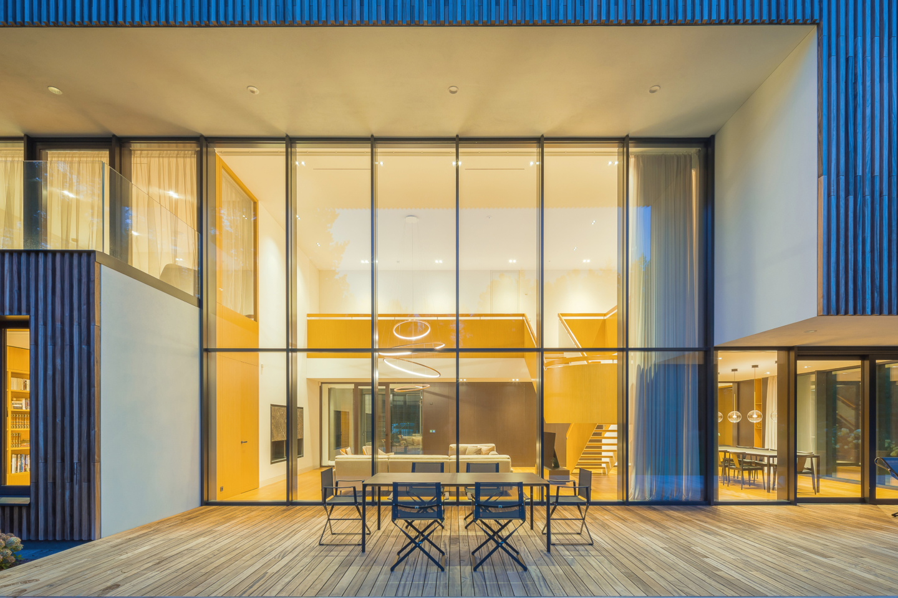
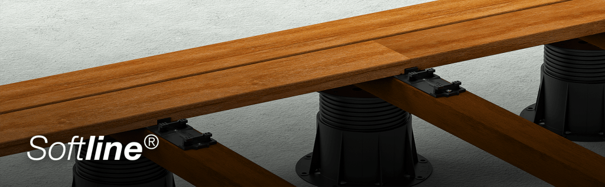
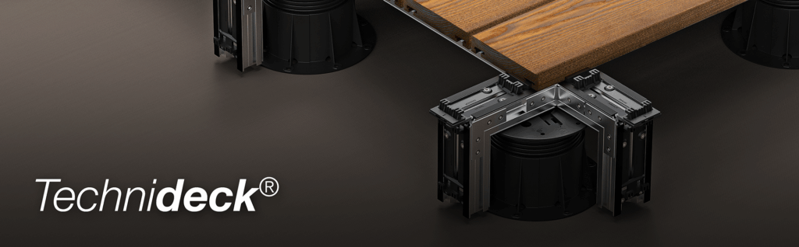
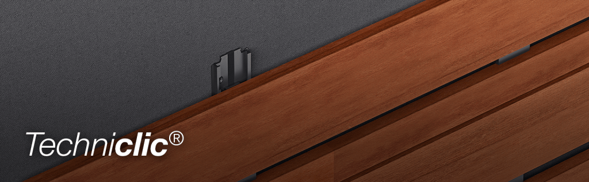
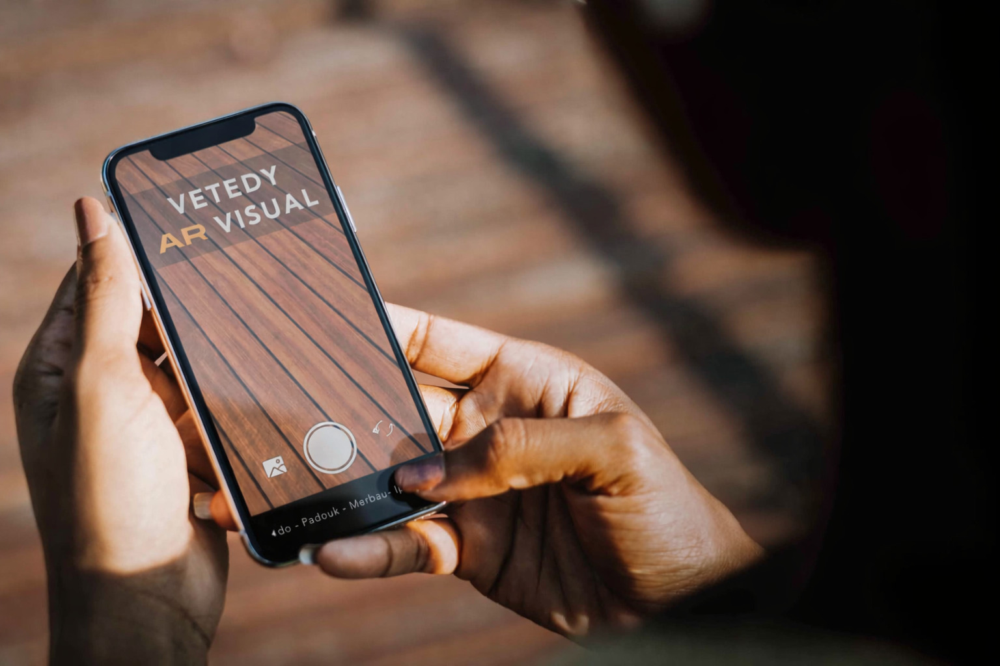
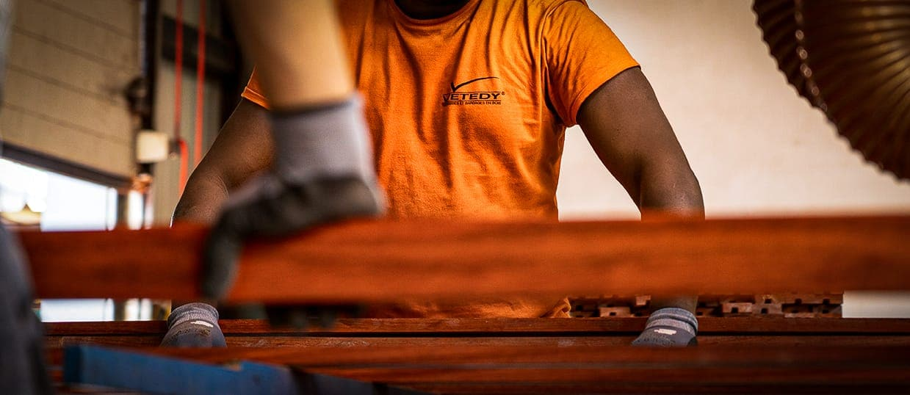
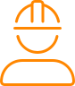

Solid wood decking systems and wood facades with invisible fasteners
High quality wood decks and facades with invisible fixation! VETEDY is the creator, manufacturer and owner of the Softline® and Technideck® systems for wood decks and Techniclic® for wood facades. Three systems with invisible fixation that have proven their technicality, durability and precision over the years since 1999.
Be inspired
Discover some of our wooden decks and facades
Wooden decks
Reliability. Aesthetics. Quality.
Our patented Softline® and Technideck® invisible fixation systems by clips are the result of many years of research and development. They have been thought and designed for a quick and easy installation thanks to a unique clip system, the invisible fixing. A perfect result, without any apparent fixation, stable & durable over time with quality wood.
 Simple system wooden facade, Fast, Invisible.
The Techniclic® invisible fixation system for wooden facades has all the advantages of its big brother: the Softline® garden parquet decking system, but with an additional ingenious technique that allows for quick vertical installation, using a minimum of fastening screws and guaranteeing exceptional longevity.
Wood cladding

VETEDY AR VISUAL
Visualize your next wood deck with our online simulator
Scan this QR code and simulate your project directly on your smartphone.
Find a reseller
Enter a postal code or a city
Vetedy
The Vetedy group experienced exponential growth following the development of its Softline® product, which was the first system for wooden deckings without visible screws and that did not rust.
Today, Vetedy is a family group with an international dimension, present in the four corners of the world: Luxembourg, Belgium, Cameroon and Indonesia.
-
Download center
View and download documents
-

Are you a professional?
Become one of our partners
-
Do you have any questions?
Find the answers to all your questions